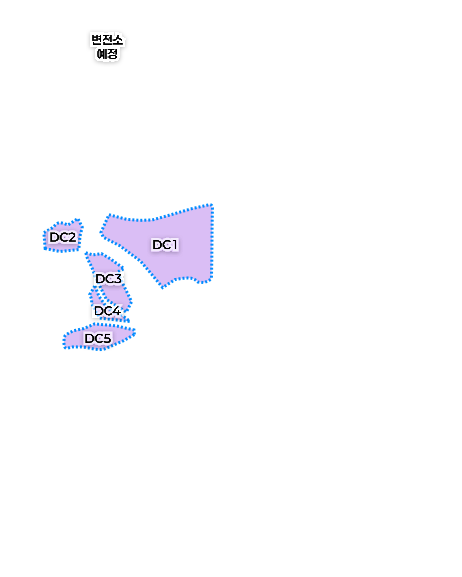
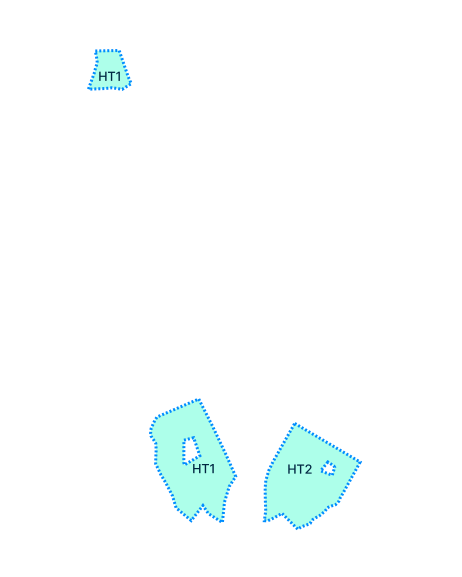
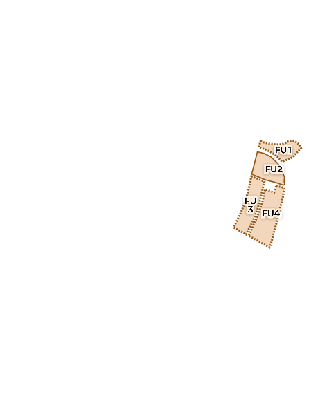
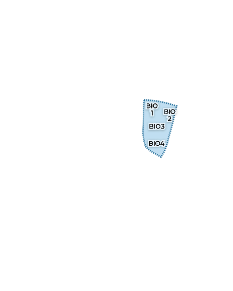
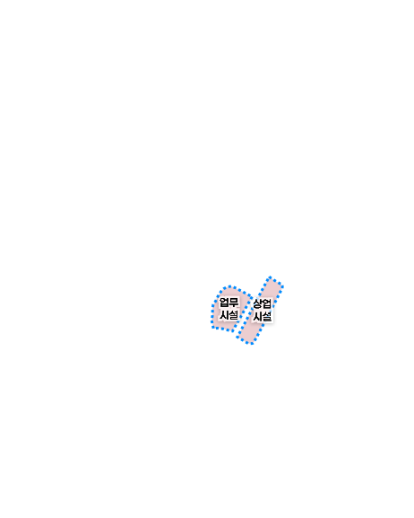
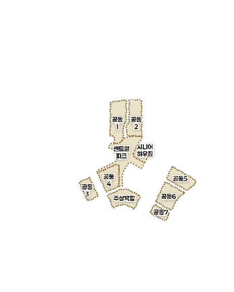
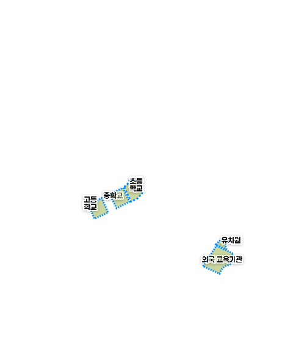
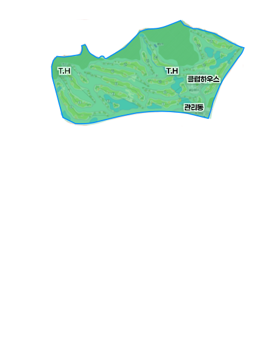

02CITY · 도시소개
구역 소개
DISTRICTS구역 소개
110만평, 계획된 미래 도시의 청사진
산업 · 주거 · 상업 · 공공이 유기적으로 어우러지는 거대 융합도시, B-CITY
8개 권역이 하나의 도시 생태계를 완성합니다
AI · BIO · FOOD · MICE 4대 클러스터와 주거 · 교육 · 업무 · 레저 4대 콤플렉스, 권역 부지 약 65.2만평을 포함해 총 약 110만평 규모입니다.
- AI 데이터6.3만평
- 바이오8.2만평
- 푸드4.2만평
- 바이오 MICE3.9만평
- 주거9.7만평
- 교육2.7만평
- 비즈니스1.7만평
- 골프 · 레저28.5만평
합계 권역 부지 약 65.2만평 · 총 약 110만평
※ 하천 · 공원 · 녹지 등 47.9만평 제외 기준입니다.
클러스터
콤플렉스
01클러스터
AI 데이터 클러스터
국가대표급 하이퍼스케일 AI 데이터 클러스터
최대 330MW AI 데이터센터 집적단지 조성 및 고성능 GPU 기반 AI바이오 데이터센터 구축


- 클러스터명
- AI 데이터 클러스터
- 부지 면적
- 207,486㎡ (61,264평)
- 수전 용량
- 최대 330MW (IT Load 240MW)
- 수전 방식
- 154kV 직접수전
- 목표 PUE
- 1.2
- 용도지역
- 준공업지역
- 건폐율 / 용적률
- 70% / 400%
구역별 면적
| 구역 | ㎡ | 평 |
|---|---|---|
| DC1 | 141,852 | 42,910 |
| DC2 | 23,499 | 7,108 |
| DC3 | 31,806 | 9,621 |
| DC4 | 11,451 | 3,464 |
| DC5 | 18,035 | 5,456 |
| 합계 | 226,643 | 68,560 |
※ 5개의 데이터센터 부지로 구성된 집적 단지
AI 데이터 클러스터는 B-CITY의 디지털 동력입니다.
국가 AI 경쟁력의 새로운 기준이 되는 하이퍼스케일 데이터 인프라가 이곳에서 시작됩니다.
-
1하이퍼스케일 전력 인프라
- 최대 수전용량 330MW · 154kV 직접 수전 (IT Load 240MW)
- 목표 PUE 1.2의 저비용 · 고효율 설계
- Low & Wide 설계로 초기 투자비 절감
-
2바이오 의료데이터 플랫폼
- NVIDIA 기반 고성능 GPU 바이오 플랫폼 (클라라 파라브릭스 · BioNeMo 등)
- 고정밀 바이오 의료데이터 수집 · 관리 · 연구
- 대학병원 데이터 및 지역 라이프로그 데이터 수집 등 협력 체계 구축 예정
-
3입주기업 전용 DC 구축
- 바이오 · 의료 전용 AI 데이터센터
- 바이오 R&D 가속화 전용 SW 생태계
- 데이터 안심존 운영
02클러스터
첨단 바이오 클러스터
AI 기반 신약 R&D 및 중소형 CDMO 거점
미국 BIOSECURE Act 및 블록버스터 특허 만료에 완벽히 대응할 AI 기반 첨단바이오산업 생태계 구축

- 부지 면적
- 270,910㎡ (81,950평)
- 구역 구성
- HT1 · HT2 (2개 구역)
- 용도지역
- 일반공업지역 / 준공업지역
- 건폐율 / 용적률
- 70% / 350~400%
구역별 면적
| 구역 | ㎡ | 평 |
|---|---|---|
| HT1+HT2 | 241,327 | 73,002 |
| HT3 | 29,583 | 8,949 |
| 합계 | 270,910 | 81,950 |
첨단 바이오 클러스터는 B-CITY의 산업 동력입니다.
바이오와 AI가 융합되고, R&D와 산업화가 연결되는 차세대 첨단산업의 거점이 이곳에서 완성됩니다.
-
1AI 기반 신약 R&D
- AI 데이터 클러스터의 NVIDIA 기반 고성능 GPU 바이오 플랫폼을 활용한 신약 R&D (암 · 당뇨 등 난치 및 희귀 질환)
- 유전체 분석 기반 바이오마커 발굴
- AI 기반 디지털 헬스케어 연구 · 개발
-
2중소형 CDMO / CMO 거점
- 중소형 기업들의 CDMO 공장 신 · 증설에 적합한 부지
- 중소 규모 바이오 · 제약 기업 집적
-
3Physical AI 인프라
- AI 기반 로보틱스 · 휴머노이드 로봇
- 스마트 모빌리티 · 자율주행
- 디지털 트윈 · 스마트팩토리
- Open Innovation Lab
03클러스터
푸드 물류 클러스터
AI 콜드체인 허브이자 군 급식 수요 대응 거점
AI 데이터 기반 미래형 식품산업 주도 및 연간 약 2조원 규모에 달하는 군 급식 민간위탁 수요 대응

- 부지 면적
- 138,860㎡ (약 42,254평)
- 구역 구성
- FL1 · FL2 · FL3 · FL4 (4개 구역)
- 용도지역
- 준공업지역
- 건폐율 / 용적률
- 70% / 400%
- 주요 시설
- 물류유통시설
구역별 면적
| 구역 | ㎡ | 평 |
|---|---|---|
| FU1 | 22,702 | 6,867 |
| FU2 | 29,435 | 8,904 |
| FU3 | 35,597 | 10,768 |
| FU4 | 51,126 | 15,466 |
| 소계 | 138,860 | 42,005 |
푸드 물류 클러스터는 B-CITY의 지속가능한 동력입니다.
첨단 ICT와 친환경 선순환이 결합된 강원형 푸드테크 거점이 이곳에서 시작됩니다.
-
1콜드체인 허브
- AI 환경제어 스마트 보관 시스템
- 대규모 저온 · 냉동 저장소
- 강원 · 수도권 · 전국 통합 물류 네트워크
-
2미래형 식품산업
- ICT 환경제어 스마트 연구관리
- 개인 라이프로그 · 헬스데이터 기반 맞춤 케이터링
- 차세대 먹거리 연구 · 양산 산업 환경 조성
-
3군급식 민간위탁 수요 대응
- 군부대가 밀집한 강원권 군 급식 민간위탁 수요 대응
- 강원형 선순환 푸드테크 생태계 조성
04클러스터
바이오MICE 클러스터
지속가능한 바이오 · 헬스 산업 커뮤니티 조성
일회성 · 정기성을 넘어, 의료 + 바이오 + 헬스 + 투자가 상시 교류하는 산업 네트워크 완성

- 부지 면적
- 128,634㎡ (약 38,912평)
- 구역 구성
- Bio1 · Bio2 · Bio3 · Bio4 (4개 구역)
- 건폐율
- 70%
- 주요 시설
- 과학자마을 · 의료시설 · MICE 복합용지
구역별 면적
| 구역 | ㎡ | 평 | 용도지역 | 용적률 | 비고 |
|---|---|---|---|---|---|
| Bio1 | 23,993 | 7,258 | 제2종 일반주거지역 | 250% | 과학자마을 |
| Bio2 | 22,917 | 6,932 | 준주거지역 | 500% | 의료시설 |
| Bio3 | 44,011 | 13,313 | 준주거지역 | 500% | MICE 복합용지 |
| Bio4 | 37,713 | 11,409 | 준공업지역 | 400% | — |
| 합계 | 128,634 | 38,912 |
바이오MICE 클러스터는 B-CITY의 글로벌 동력입니다.
정밀의료와 글로벌 협력이 만나는 차세대 헬스케어 산업의 중심이 이곳에서 완성됩니다.
-
1통합 의료 플랫폼
- AI 헬스케어 글로벌 혁신 규제자유특구
- 바이오 국가첨단전략산업 특화단지
- 글로벌 바이오 · 제약 연구 혁신 포럼
-
2정밀의료 빅데이터 허브
- 분산형 · 가상 임상시험
- 인실리코 시뮬레이션 RWD 공급 기지
- ADC 등 초정밀 맞춤형 신약 검증
-
3바이오 · 헬스 산업 커뮤니티
- 바이오 · 헬스 산업 상시 커뮤니티 구축
- 글로벌 VC 및 유망 바이오 벤처 교류를 통한 전략적 파트너십 발굴
05콤플렉스
비즈니스 콤플렉스
상업 · 업무 · 문화가 융합된 강원 관문
B-CITY의 활력을 만드는 단핵 복합 상권 및 문화 거점 · 직 · 주 · 락 중심 주민친화적 상권 조성

- 부지 면적
- 55,703㎡ (약 16,850평)
- 구역 구성
- 업무시설 · 상업시설 · 문화시설
- 용도지역
- 일반상업지역
- 건폐율 / 용적률
- 80% / 600%
구역별 면적
| 구분 | ㎡ | 평 |
|---|---|---|
| 업무시설 | 29,583 | 8,949 |
| 상업시설 | 26,120 | 7,901 |
| 합계 | 55,703 | 16,850 |
비즈니스 콤플렉스는 B-CITY의 활력의 심장입니다.
상업 · 업무 · 문화가 하나의 공간에서 만나는 도시의 가장 활기찬 무대가 이곳에서 완성됩니다.
-
1광역 수요 흡수 상권
- 남춘천IC · 강촌IC 통한 광역 유동인구 유입
- 단핵 중심 상업지로 B-CITY 전체 수요 집결
-
2업무 허브 인프라
- 본사 이전 기업 · 스타트업 오피스 집적
- 업무시설 약 9,000평 규모 오피스 단지
- 종사자 직주근접 오피스텔 공급
-
3문화 · 상업 복합 광장
- 직 · 주 · 락(Work-Live-Play) 통합 공간
- 보행자 중심 문화 광장 연계 설계
- 접근성 · 편의성이 우수한 도심 중앙부 배치
06콤플렉스
하우징 콤플렉스
첨단 기술과 자연을 누리는 하우징 · 시니어 하우징
AI · 로보틱스 · 자율주행 등 첨단기술로 완성되는 하이엔드 하우징 및 하이퍼엔드 시니어 하우징

- 부지 면적
- 321,307㎡ (97,195평)
- 구역 구성
- 단독주택 · 공동주택 · 근린생활시설 · 주상복합
- 계획 세대수
- 6,366세대 (공동주택 4,000 · 시니어하우징 2,000)
- 계획 인구
- 15,917명
구역별 면적
| 구역 | ㎡ | 평 | 층수 |
|---|---|---|---|
| 단독주택 | 28,986 | 8,768 | 4층 이하 |
| 공동주택 | 250,291 | 75,713 | 29층 이하 |
| 근린생활시설 | 4,206 | 1,272 | — |
| 주상복합 | 42,639 | 12,898 | 35층 이하 |
| 합계 | 326,122 | 98,651 |
하우징 콤플렉스는 B-CITY의 정주 가치입니다.
일과 삶, 자연과 첨단이 어우러지는 새로운 라이프스타일이 이곳에서 펼쳐집니다.
-
1소셜믹스
- 전 단지가 학교 · 공원 · 상가 등 접근성이 우수해 편리하고 쾌적한 정주 여건 마련
- 아파트 · 시니어하우징 · 주상복합 · 단독주택 등 다양한 주거 유형 계획
-
2워라밸 힐링 라이프
- AI 데이터 클러스터 및 첨단산업 클러스터 밀착 배치로 직주근접
- 보행자 중심 네트워크 조성
- Green & Blue Life 완성
-
3하이퍼엔드 시니어 하우징
- AI 의료 데이터 인프라 활용
- 휴머노이드 · 로봇 등 피지컬 AI 케어 시스템
- 대학병원 연계 CCRC 메디컬 벨트 구축 (추진)
- 단지~도시 내 자율주행 모빌리티 체계 구축
07콤플렉스
에듀 콤플렉스
생애 전주기 교육하는 ‘생각하는 도시’ 글로벌
춘천시 연계 개방형 지역 협력 교육 거버넌스와 글로벌 인재 육성 · 유입

- 부지 면적
- 90,147㎡ (27,269평)
- 구역 구성
- 유치원 · 초 · 중 · 고등학교 · 외국교육기관
- 건폐율
- 50%
- 연계 특구
- 에듀포레스트 교육발전특구 춘천
구역별 면적
| 구역 | ㎡ | 평 | 건폐율 | 용적률 |
|---|---|---|---|---|
| 유치원 | 4,202 | 1,271 | 50% | 200% |
| 초등학교 | 15,667 | 4,739 | 50% | 200% |
| 중학교 | 15,304 | 4,629 | 50% | 200% |
| 고등학교 | 14,435 | 4,367 | 50% | 200% |
| 외국교육기관 | 40,539 | 12,263 | 50% | 250% |
| 합계 | 90,147 | 27,269 |
에듀 콤플렉스는 B-CITY의 지속가능한 성장 동력입니다.
도시 전체가 학교가 되고, 일상이 교육이 되는 새로운 배움의 도시가 이곳에서 시작됩니다.
-
1생애 전주기 교육
- 「에듀포레스트 교육발전특구 춘천」과 연계해 ‘생각하는 도시’ 표방
- 유치원부터 고등학교까지 생애 전주기 맞춤형 교육 시스템 구축
-
2글로벌 교육망
- 외국 교육기관 설립으로 글로벌 교육 환경 및 인프라 조성
- 고급 인력 유입 및 정착 지원
- ※ 기업도시개발특별법 제38조
-
3지역 협력
- 도시 내 입주 기업 및 연구 기관 연계
- 강원대 · 한림대 등 지역거점 대학 연계 (추진)
- AI 기반 진로 체험 등 개방형 협력 체계 및 지역 협력형 교육 거버넌스 구축
08콤플렉스
골프레저 콤플렉스
바이오 스마트 · 피지컬 AI 기반 웰니스
친환경 그린 인프라에서 경험하는 로봇 캐디 · 메디컬 케어 등 미래형 라이프스타일 플랫폼 완성

- 부지 면적
- 942,975㎡ (약 285,250평)
- 종류
- 대중형 18홀 (파72)
- 연장
- 6,570m
- 주요 시설
- 클럽하우스 · 그늘집 · 관리동 · 연습시설
구역별 면적
| 시설 | 수량 |
|---|---|
| 클럽하우스 | 1동 |
| 그늘집 | 2동 |
| 관리동 | 2동 |
| 연습시설 | 1동 |
※ 골프장 부지는 원형지 공급 예정이며, 파크골프장 부지는 검토 중입니다.
골프레저 콤플렉스는 B-CITY의 웰니스 동력입니다.
자연과 데이터, 여가와 건강이 만나는 새로운 라이프스타일의 무대가 이곳에서 펼쳐집니다.
-
1바이오 스마트 / 피지컬 AI
- 라운딩 시 생체 데이터 수집 · 분석
- 메디컬 케어 클럽하우스 운영
- 피지컬 AI 기반 로봇 캐디
- 자율주행 스마트 모빌리티 카트
-
2친환경 바이오 필드
- 도시 전체의 쾌적성을 높이는 그린 인프라
- 공원 · 녹지와 연계된 친환경 필드
- 대중형 골프장으로 접근성 확보
-
3미래형 라이프스타일
- 직주근접형 레저 라이프
- 서울 40분(잠실) · 춘천 도심 20분
- 임직원 복지 + 분양 · 회원권 수익 기반
여덟 개의 권역이 각자의 역할을 하고
그 합이 하나의 도시가 됩니다
※ 상기 계획(안)은 국토교통부 통합개발계획 접수(안) 기준으로 작성된 것으로, 추후 사업 주체 또는 관계 기관 사정, 인허가 과정 등에 따라 변경될 수 있습니다.